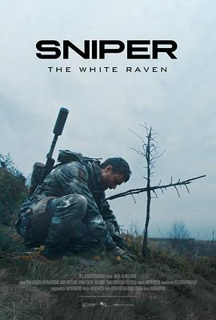

狙击手·白乌鸦 / Sniper. The White Raven
又名：狙击手：代号白乌鸦
最开始是在youtube shorts上看到新兵训练的那一段，教官在身边开枪，要求保持不动。然而剧情上还是平淡了些。
作品信息
| 导演 | 马里安·布杉 |
| 编剧 | 马里安·布杉 / Mykola Voronin |
| 主演 | 巴甫洛·阿尔多辛 / 玛丽娜·科什金娜 / 安德烈·莫斯特连科 / 扎卡里·沙德林 |
| 类型 | 动作 / 战争 |
| 制片国家/地区 | 乌克兰 |
| 语言 | 乌克兰语 |
| 上映日期 | 2022-07-01(乌克兰) |
| 片长 | 112分钟 |
| IMDb | tt19465630 |
说过什么
2023-10-01 18:48:04
看过 · 时间来自广播，短评来自标记页
最开始是在youtube shorts上看到新兵训练的那一段，教官在身边开枪，要求保持不动。然而剧情上还是平淡了些。
2023-09-23 07:01:34
广播 · 想看
最后一次看到是 2026-08-01T11:04:44+10:00 · 豆瓣原页